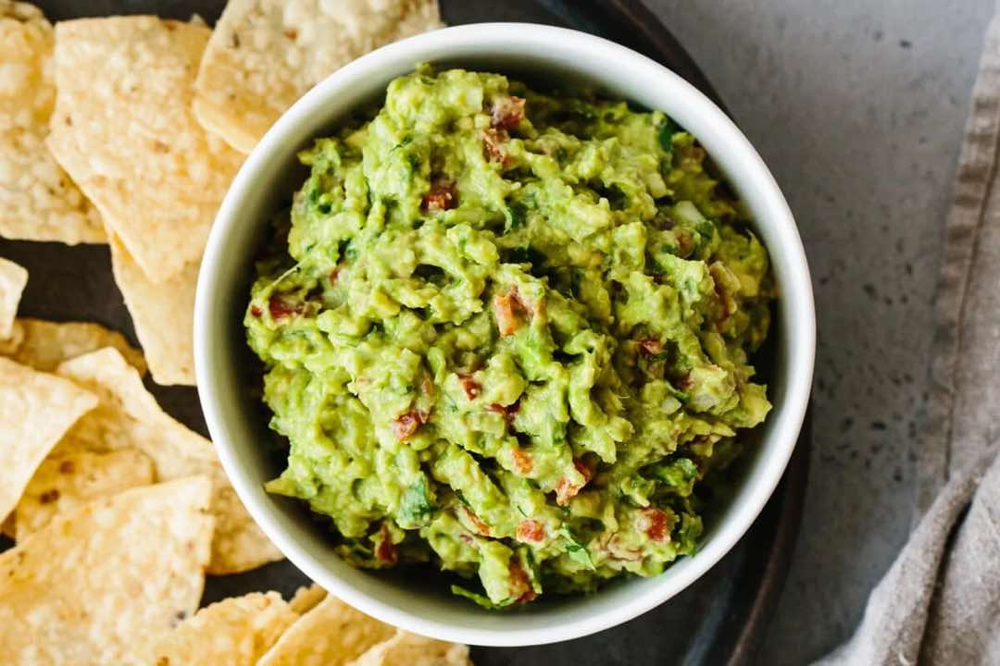

Best Ever Guacamole (Fresh, Easy & Authentic)
AppetizerDips
Servings4 servings
PrepPT10M
CookPT0S

Ingredients
- 3 avocados (ripe)
- ½ small yellow onion (finely diced)
- 2 Roma tomatoes (diced)
- 3 tablespoons finely chopped fresh cilantro
- 1 jalapeno pepper (seeds removed and finely diced)
- 2 garlic cloves (minced)
- 1 lime (juiced)
- ½ teaspoon sea salt
Directions
- Slice the avocados in half, remove the pit, and scoop into a mixing bowl.
- Mash the avocado with a fork and make it as chunky or smooth as you'd like.
- Add the remaining ingredients and stir together. Give it a taste test and add a pinch more salt or lime juice if needed.
- Serve the guacamole with tortilla chips.
Source
https://downshiftology.com/recipes/best-ever-guacamole/
This page includes Schema.org Recipe structured data for recipe importers.